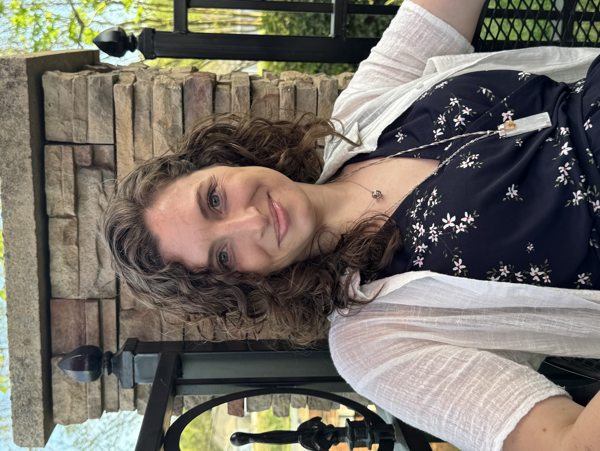
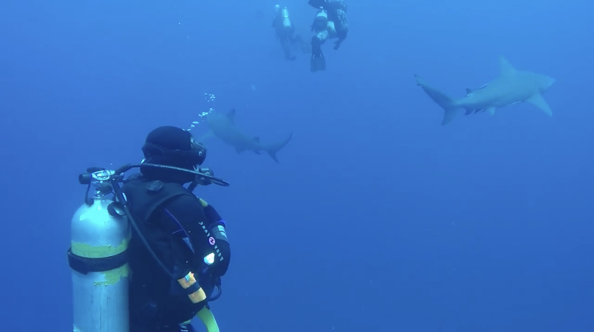

About Me

Career Journey
The most consistent thread throughout my career has been a fascination with understanding how systems work. In marketing and brand strategy, I investigated customer behavior and the factors driving business performance. As the co-owner of a construction company, I built operational processes and tracked the metrics that enabled us to grow rapidly and take on increasingly large commercial projects. Graduate research in bioinformatics introduced me to statistical computing, large-scale data analysis, and the discipline of working with complex datasets, while roles at AvidXchange and Coca-Cola Consolidated brought those same instincts into business intelligence, data modeling, and analytics engineering. Regardless of the industry, I have spent my career investigating why patterns emerge, building systems that make those patterns visible, and understanding the forces that shape outcomes.  I'm currently building a career that blends technical skill with purpose-driven work, with the long-term goal of contributing to organizations whose values align with my own. My background is rooted in business intelligence, but I'm increasingly drawn to work that bridges data and ethics, finding meaningful insights and making them visible. Every bit as masterful as the artists and scholars about whom she writes, Popova brings into clarity the intimate lives of some of history's greatest minds and most significant contributors. Journeying across lifetimes, I was captivated by the vast and remarkable cast she assembles, from Margaret Fuller and Emily Dickinson to Rachel Carson and so many notable others. The true genius of the work is the layering of historical context with vivid descriptions of interpersonal relationships that together offer a textured view of the entwined interbeing that characterizes our species. It is one I will return to throughout my life, finding something new each time. Schlanger curates a collection of the most cutting edge research on plant life today, narrating a complex picture of the inner lives of the flora with whom we share our world. This book demistified for me long held wonderings about plant conciousness and delivered moments of jaw dropping revelation and discovery. I found this work deeply delightful from start to finish. Carroll's ability to make complex ideas feel approachable has made him a favorite author and podcaster of mine. He weaves together the finer details of the laws of physics with the reflections of a philospher to produce thoughtful explorations of the foundations of existence. It is through reading this work that I discovered in myself a poetic naturalist and solidified Carroll's position in my library as a top contributor. Rosemerry Wahtola Trommer is a poet whose work I return to again and again, and this volume found me at just the right moment, arriving as a quiet companion during one of the most significant losses of my life. This collection has the feeling of sitting in a sunlit kitchen with a steaming mug of tea and a trusted friend, talking honestly about the absurdity of life and loss and the way grief colors and sharpens every experience. Her poems capture the exquisite nature of human pain, the singularity of our capacity to love deeply, and our remarkable ability to find beauty anyway.The Why
Using Data Analytics to Drive Meaningful Change
Influential Recent Reads
Query Everything
"When Kepler found his long-cherished belief did not agree with the most precise observation, he accepted the uncomfortable fact. He preferred the hard truth to his dearest illusions. That is the heart of science." Carl Sagan, 'Cosmos'
"I can live with doubt and uncertainty and not knowing. I think it is much more interesting to live not knowing than to have answers that might be wrong." Richard Feynman, 'The Pleasure of Finding Things Out'